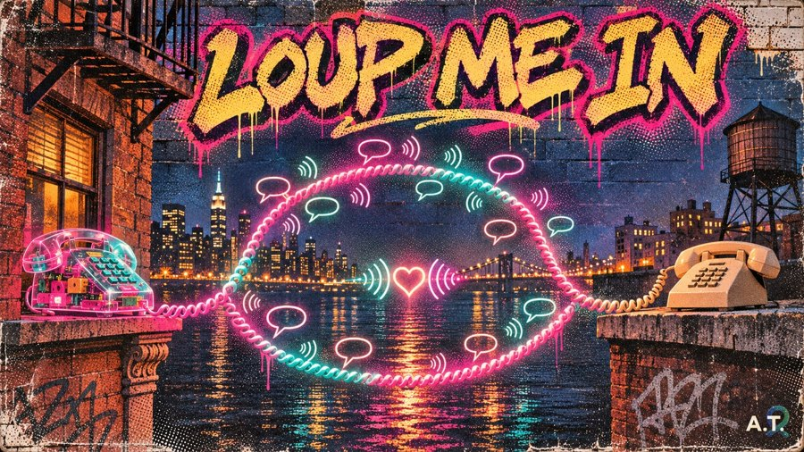

Track 04 · My Turn
Loup Me In
Summer 2002. Brooklyn on one end of the line, Newark on the other. A.T. was eighteen when she dialed into The Loup, the teen phone party line half of New York and New Jersey was on, and one voice cut through the noise. Hours on the phone from sunrise to the moonlight, her mama on the other line, "you hang up first", the phone bill on the kitchen table... then one night after her daddy tucked her in, out the first floor window and onto the A train to the water, to hold his hand for the very first time.
 Watch the official video
Watch the official video
Lyrics
[Intro]
(Who on the line?)
(Brooklyn in here... Newark in here...)
Ooh... ooh ooh
[Verse 1]
Summer oh two, I'm eighteen on the kitchen phone
Cord pulled down the hallway, door shut, all alone
Got the number off a flyer that my girl slid me in class
Dialed into The Loup and heard the whole city laugh
Everybody yellin' out their name and where they from
Then a voice cut through it, low and easy like a drum
He said "Brooklyn?" I said "Bed Stuy, baby, where you be?"
He said "Brick City, ma, two rivers and a borough between you and me"
Then he gave me seven digits and I wrote 'em on my hand
Hung up on the party, called him straight, you understand
Never seen his face, didn't know his name a week ago
Only knew his laugh had me smilin' in the dark, so
[Pre Hook]
Did we talk until the sun came up? (Yeah)
Did my mama pick up on the other line? (Yeah)
Did I tell him "you hang up first"? (Yeah)
And did either one of us hang up? (Never)
[Hook]
Loup me in, put me on the line
Your voice is all I need to feel alright
Loup me in, baby, stay on the phone
Long as I can hear you breathin', I'm not alone
From the sunrise to the moonlight
Loup me in, Loup me in
[Verse 2]
Mama in the doorway, "Girl, it's two in the morning"
Click on the extension, "Get off my phone," that's a warning
Whispered "call me back," we waited, then it rang
Beep beep on the call waiting, I ain't click over for a thing
"You hang up." "No, you." "Okay, on three."
One, two, three... and we both still breathin', see
Fell asleep with the receiver on my pillow by my ear
Woke up to the dial tone and the sunlight standing here
Daddy at the table with the phone bill in his hand
Readin' every number like he tryna understand
I just smiled into my cereal, I didn't say a word
Some things cost a lot, but some things gotta be heard
[Pre Hook]
Did we talk until the sun went down? (Yeah)
Did we stay on through the late night show? (Yeah)
Did I count to three and hold my breath? (Yeah)
And did either one of us let go? (Never)
[Hook]
Loup me in, put me on the line
Your voice is all I need to feel alright
Loup me in, baby, stay on the phone
Long as I can hear you breathin', I'm not alone
From the sunrise to the moonlight
Loup me in, Loup me in
[Bridge]
Daddy tucked me in, kissed my head, and cut the light
Waited for the floor to stop creakin' in the house tonight
First floor window, sneakers in my hand
Caught the A train to the water where he said he'd stand
City on the river, and he's finally real
He just took my hand... so that's how first love feel
[Final Hook]
Loup me in, put me on the line
Your voice is all I need to feel alright
Loup me in, baby, stay on the phone
Long as I can hear you breathin', I'm not alone
From the sunrise to the moonlight
Loup me in, Loup me in
[Outro]
You hang up.
No, you hang up.
Okay... on three.
(click, dial tone)
Written by Grey Beard and A.T. ℗ & © 2026 Threadia AI, Inc. All rights reserved.